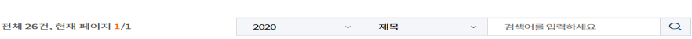

로그인 ㅣ 회원가입 ㅣ
마이페이지 ㅣ 고객센터
주간건강과질병

- 제13권 제25호 [날짜 : 2020-06-18]
- [코로나19 주간 발생보고서] 코로나바이러스감염증-19 주간 발생보고서(2020.6.13. 기준)
- 2019년 국외 메르스 발생 현황
- 2016∼2019년 크로이츠펠트-야콥병 발생 현황
- 국내 다중이용시설 유래 레지오넬라 환경균주의 분포양상 분석, 2018∼2019
- 제13권 제24호 [날짜 : 2020-06-11]
- [코로나19 주간 발생보고서] 코로나바이러스감염증-19 주간 발생보고서(2020.6.6. 기준)
- [건강이슈] 세계헌혈자의 날(World Blood Donor Day)
- 국가 혈액수급감시 체계 개선 방안 연구 결과
- 수혈자 역추적 조사 지침 개정
- [만성질환 통계] 활동제한율 추이, 2007~2018
- 제13권 제23호 [날짜 : 2020-06-04]
- [코로나19 주간 발생보고서] 코로나바이러스감염증-19 주간 발생보고서(2020.5.30. 기준)
- 국립인천공항검역소 코로나바이러스감염증-19 검역단계 대응 보고
- 샌드위치 효소면역분석법을 이용한 페스트 검사법 개발
- 우리나라 중고등학생의 구강건강 행태 현황과 추이
- [만성질환 통계] 구강기능제한율 추이(2007~2018) 및 저작불편호소율 추이(2007~2018)
- 제13권 제22호 [날짜 : 2020-05-28]
- [코로나19 주간 발생보고서] 코로나바이러스감염증-19 주간 발생보고서(2020.5.23. 기준)
- 2019년 집단시설 결핵역학조사 결과
- 성인에서 담배 종류별 사용률의 변화: 담배 판매량과 비교
- [만성질환 통계] 현재흡연률 추이(2007~2018)와 현재흡연자의 금연시도 및 금연계획률 추이(2007~2018)
- 제13권 제21호 [날짜 : 2020-05-21]
- [코로나19 주간 발생보고서] 코로나바이러스감염증-19 주간 발생보고서(2020.5.16. 기준)
- 희귀질환 극복의 날(Rare Disease Day)
- 국내 희귀질환관리사업 추진 현황
- 2020년 1∼4월 감염병 감시체계 운영결과
- 제13권 제20호 [날짜 : 2020-05-14]
- [코로나19 주간 발생보고서] 코로나바이러스감염증-19 주간 발생보고서(2020.5.9. 기준)
- 저항성고혈압의 원인, 치료, 임상적 중요성 및 국내 현황
- 폐동맥고혈압에서 심층표현형 연구를 위한 장기 코호트 연구 플랫폼(PHOENIKS)의 임상적 의미
- 최근 5년간 입국단계에서의 발열·호흡기 유증상자 조사
- 지역사회에서 발생한 코로나19 확진환자에 대한 사례조사
- [만성질환 통계] 고혈압 유병률 추이(2007~2018)와 고혈압 인지율, 치료율, 조절률 수준 및 추이(2007~2018)
- 제13권 제19호 [날짜 : 2020-05-07]
- [코로나19 주간 발생보고서] 코로나바이러스감염증-19 주간 발생보고서(2020.5.2. 기준)
- [건강이슈] 세계 천식의 날(World Asthma Day)
- 실시간 원격모기감시장비 시범운영
- 말라리아 매개모기 종합방제 시범사업 결과보고
- 한국 B형간염의 사회경제적 비용, 2002∼2015년
- 제13권 제18호 [날짜 : 2020-04-29]
- [코로나19 주간 발생보고서] 코로나바이러스감염증-19 주간 발생보고서(2020.4.25. 기준)
- 2019년도 초ㆍ중학교 입학생 예방접종 확인사업 결과
- 인플루엔자 예방접종 효과평가 체계 구축 및 2018-2019절기 효과평가 실시
- 임신부 인플루엔자 예방접종의 안전성 및 국외 이상반응관리 현황연구
- 결핵 환자 가족접촉자 검진 사업 결과 분석
- [만성질환 통계] 청소년의 신체활동 실천율 추이(2009~2019) 및 청소년의 근력강화운동 실천율 추이(2007~2019)
- 제13권 제17호 [날짜 : 2020-04-23]
- 코로나바이러스감염증-19 주간 발생보고서(2020.4.18. 기준)
- 2019년 세계 말라리아 보고서
- 2019년 국내 말라리아매개모기 감시 현황
- 2019년 국내 말라리아 발생현황 및 퇴치사업 추진결과
- 국가 잠복결핵 코호트의 활동성 결핵 발생 현황 분석
- 제13권 제16호 [날짜 : 2020-04-16]
- 코로나바이러스감염증-19 주간 발생보고서(2020.4.11. 기준)
- COVID-19 Special Issue: Brief report on the situation in China during the COVID-19 outbreak
- COVID-19 Special Issue: Contact tracing results of the first confirmed COVID-19 case in the Republic of Korea
- COVID-19 Special Issue: Investigation of COVID-19 outbreaks through Zumba dance classes in Korea
- 2019년 진단용 방사선 안전관리 통계
- 영상의학검사에서의 환자 피폭선량 평가 프로그램
- 치과분야의 방사선안전관리시스템 실태와 인식개선
- [만성질환 통계] 신체활동 실천율 추이(2008~2018)와 주관적 비만인지율 및 체중감소 시도율 추이(2007~2018)
- 제13권 제15호 [날짜 : 2020-04-09]
- [코로나19 주간 발생보고서] 코로나바이러스감염증-19 주간 발생보고서(2020.4.4. 기준)
- 15∼24세 청소년 대상의 영국 클라미디아감염증 국가검진사업
- 최근 5년간(2014∼2018) 국내 성매개감염병 신고 발생 동향
- [만성질환 통계] 청소년의 우울감 경험률 추이(2007~2019) 및 청소년의 스트레스인지율 추이(2007~2019)
- 제13권 제14호 [날짜 : 2020-04-02]
- [코로나19 주간 발생보고서] 코로나바이러스감염증-19 주간 발생보고서(2020.3.28. 기준)
- 2019년 참진드기 발생밀도 조사 현황
- 2019년 쯔쯔가무시증 매개 털진드기 전국 분포조사 현황
- 2019년 결핵환자 신고현황
- 2018년 국내 급성이완성마비 병원체 감시
- 제13권 제13호 [날짜 : 2020-03-26]
- 줌바댄스 강습을 통해 발생한 코로나19 집단발병조사
- 2019년 노인 폐결핵 검진 시범사업 결과 분석
- [만성질환 통계] 스트레스인지율 추이, 2007~2018
- 제13권 제12호 [날짜 : 2020-03-19]
- 2019년 쪽방거주자 폐결핵검진 시범사업 결과
- 결핵 코호트 구축 및 운영
- 외상성 뇌손상의 현황 및 예방 전략
- 제13권 제11호 [날짜 : 2020-03-12]
- 세계 콩팥의 날(World Kidney Day)
- 만성신장질환 코호트의 국제 공동 연구(iNET-CKD)
- 근거 기반의 미세먼지 건강수칙 개발
- [만성질환 통계] 만성콩팥병(중등도 이상) 유병률 추이, 2008~2018
- 제13권 제10호 [날짜 : 2020-03-05]
- 신종코로나바이러스감염증-19 중국 상황에 대한 짤막한 보고
- 세계 여성의 날(International Women’s Day)
- 여자 청소년의 월경용품 사용 현황과 인식
- [만성질환 통계] 고중성지방혈증 유병률 추이(2008∼2018) 및 포화지방산 1일 섭취량 추이(2013∼2018)
- 제13권 제9호 [날짜 : 2020-02-27]
- 한국 초기 코로나바이러스감염증-19 환자 28명의 역학적 특성
- 2011∼2018년 국외유입감염병의 감시 특성
- [만성질환 통계] 치주질환 유병률 추이(2008∼2018) 및 영구치우식 유병률 추이(2008∼2018)
- 제13권 제8호 [날짜 : 2020-02-20]
- 두창바이러스의 실험실적 감별검사 소개
- 압타머를 이용한 감염병 검사법 개발 연구동향 소개
- 제13권 제7호 [날짜 : 2020-02-13]
- 코로나바이러스감염증-19 1번 환자 접촉자 조사 결과
- 우리 국민의 당 섭취 현황
- 우리나라 청소년의 물 섭취 현황: 2019 청소년건강행태조사 결과를 중심으로
- [만성질환 통계] 영양소 섭취기준에 대한 섭취 비율(2018) 및 하루 과일, 채소 500g 이상 섭취자 분율 추이(2007~2018)
- 제13권 제6호 [날짜 : 2020-02-06]
- 세계 암의 날(World Cancer Day)
- 2019년도 질병관리본부 기관생명윤리위원회 운영 결과
- 2019년도 기관생명윤리위원회 등록 현황
- 제13권 제5호 [날짜 : 2020-01-30]
- 한국인 급성심근경색증 환자 등록 연구 소개
- 한국인의 식품섭취 다양성 현황과 세분화 집단 분석
- [만성질환 통계] 가공식품 선택 시 영양표시 이용률 추이, 2008~2018
- 제13권 제4호 [날짜 : 2020-01-23]
- 세계 한센병의 날(World Leprosy Day)
- 국내 한센병 환자의 이해
- 2019년 국내 한센병 신환자 사례
- 2018년 국내 급성설사질환 원인 바이러스 감시 현황
- [만성질환 통계] 하루 1회 이상 외식률 추이, 2008∼2018
- 제13권 제3호 [날짜 : 2020-01-16]
- 살아있는 간 기증자의 법 제도적·의학적 선별기준 방향
- 2019년 조혈모세포·제대혈 기증 대국민 인식조사 결과
- [만성질환 통계] 아침식사 결식률 추이, 2007∼2018
- 제13권 제2호 [날짜 : 2020-01-09]
- 일개 직장 결핵역학조사 결과
- 국내 외국인 결핵환자의 결핵균 유전형 특성 분석(2017~2018년)
- 2006∼2018년 급성심장정지조사 주요 결과
- [만성질환 통계] 주류소비량 국제 비교 - OECD 회원국 중심
- 제13권 제1호 [날짜 : 2020-01-02]
- 법정감염병 분류체계 전면 개편 시행
- 2020년 상반기 검역감염병 오염지역 안내
- C형간염 인식도 조사결과 및 자가 체크리스트 개발
- [만성질환 통계] 심폐소생술의 일반인 시행률 추이, 2008∼2018